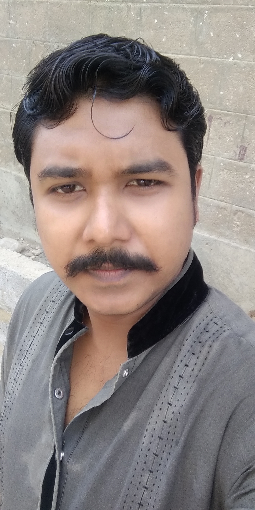

RESUME / CV

BIO DATA
ACADEMIC QUALIFICATION
- School Certificate (T.S.C) in Mechanical Drafting.
- Diploma of Associate Engineer (D.A.E) in Instrumentation and Process Control.
- Bachelor of Technology (Pass & Hons) in Electronics.
- Master of Science (MS) in Electronics.
COURSES & WORKSHOPS
- Operation and Depot level Training course on Avara Multiplexers (from Melbourne, Australia).
- Diploma and training on RF-7800W (HCLOS) System (from L3 Harris, Pakistan).
- Diploma on Radio Set RL-532A Operation, repair / maintenance and the security platforms HC-8224.(from Crypto International, Switzerland)
- ABI’s Advance Diagnostic Systems – Board Master and RevEng Schematic Learner (from ABI Electronics, UK).
- Maintenance course of Rapiscan X-Ray machine and Metor Walkthrough metal detectors (from IAL Pakistan) .
- Basic service training course on Unify solutions PABX (Insiyabi Pakistan).
- Diploma In Website Engineering (D.I.W.E).
- Basic Software / Hardware Training Program.
- PIC Microcontroller Course.
- OPTIX OSN 500 / 550 SDH equipment maintenance course.
- Diagnosys Pinpoint Tester familiarization course.
- “I” Level maintenance training on RL Radio.
- Teaching technique course from P.A.F.
- Operation & Maintenance of Aerospace ground equipment course.
- Operation / Maintenance and troubleshooting of Millat generator.
- Operation and maintenance of Terex crane.
- Networking & AI System stream and Comm stream course
- Workshop On “OPTISYS” A Powerful Simulation Tool for Research.
- Workshop on how to do research and make it visible.
WORKING EXPERIENCE
I am working in Pakistan Air Force since 2007. I have worked in many Squadrons / Sections of the organization some major departments and systems are as follows;
From 2007 to 2010 worked in Telecom Engineering Squadron
- Trouble shooting computer hardware and installation of software’s.
- Operation and maintenance of uninterrupted power supply (UPS).
- Operating of digital and analog exchanges (Meridian11c, Hipath-1150).
- Field exchanges and field telephones and communication equipments.
- Repairing and operation of network accessories and equipment.
- Repairing of printers, scanners and other accessories.
From 2010 to 2014 worked in Radio Vehicle Flight
- Operation and maintenance of generators.
- Operation and maintenance of compressors.
- Maintenance of radio vehicle transport (RVT’s).
- Maintenance of common user vehicles.
- Management of schedule servicing and maintenance.
From 2014 to Till working in Networks Engineering Squadron
- Working on FMX (Flexible Multiplexer) operation and maintenance and repairing all cards of FMX.
- Operation and maintenance of SRAL & SRAL XD systems.
- Operation and maintenance of Optical Multiplexers.
- Repairing of Network Communication equipment’s (ONT, routers etc).
- Operation and maintenance of Dynaflex Multiplexers.